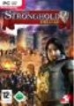

Stronghold 2 Deluxe

Mit der Deluxe-Version wird Stronghold 2 um neue Kampagnen, Gegner und Maps bereichert.
Der Spieler kann eine Vielzahl von Burgen und Verteidigungsanlagen bauen und entwickeln.
Nebenbei überwacht er, wie seine Bauern ihrem Tagewerk nachgehen.
Er wird das mittelalterliche Leben in all seinen Formen erleben von Festivitäten und Turnieren bis zu betrunkenen Mägden, die ihrem Herrn das Essen servieren.
Außerdem erhält der Spieler mehr Kontrolle über den strategischen Aspekt des Spiels.
Stronghold 2 ist die beste Darstellung von Belagerungs-Kriegsführung und Burg-Leben, die es jemals in einem Computer-Spiel gab.
Mit Stronghold 2 Deluxe erhält sie noch mehr spannende Gameplay-Elemente. Werden sie der hoheitliche Herrscher über Ländereien, während sie ihre Burg bauen und befestigen.
Beschwichtigen sie das Landvolk, indem sie Feste abhalten, bei denen das Bier in Strömen fließt oder herrschen sie mit eiserner Hand und verbreiten Angst in den Herzen ihrer Untertanen.
FEATURES: - Ein vollkommen neuer Spiel-Modus. Der Spieler nimmt an einem Kreuzzug quer durch Europa teil,
bei dem er historische Burgen angreift oder verteidigt.
Jede neue Burg stellt eine größere Herausforderung dar.
- Drei neue Gegner stellen sich dem Spieler zum Gefecht: die Königin, der Bischof und der edle Sir Grey.
Jeder hat seine eigene Strategie und Spiel-Stil.
Gemeinsam beleben sie den Kingmaker-Modus aufs Neue. - Zwei neue Weltkarten, Korea und Europa, und zwei neue Landschaftskarten Zur See und Drei Brücken erweitern das Schlachtfeld des Kingmaker-Modus. Sie sind auch für Multiplayer-Spiele verfügbar.
- Die Anzahl der historischen Burgen wird mit neuen aufregenden Festungen nahezu verdoppelt.
Die neuen Burgen sind: Windsor Castle, Edinburgh Castle, Haut-Koenigsburg, Tower of London, Burg Fougeres, Harlech Castle, Heuneburg.
Artikel-Preis:
9.99¹ €
¹ = ohne mwst.